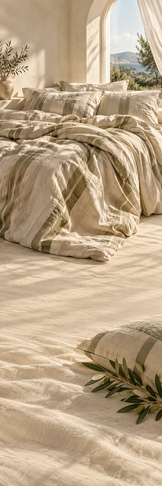

CAMPO HOME
BeddengoedSeizoenscampagne
CAMPO HOME / THE SLOW MORNING
Nog vijf
minuutjes.
Sommige dagen mogen zacht beginnen.
Licht op de deken. Een vouw waar je hand in past. Zachte kleuren en luchtige lagen voor een slaapkamer die meteen van jou voelt.
Bekijk de bed-editMaak ruimte
voor rust.
Sommige dagen mogen zacht beginnen.
Bekijk de bed-edit